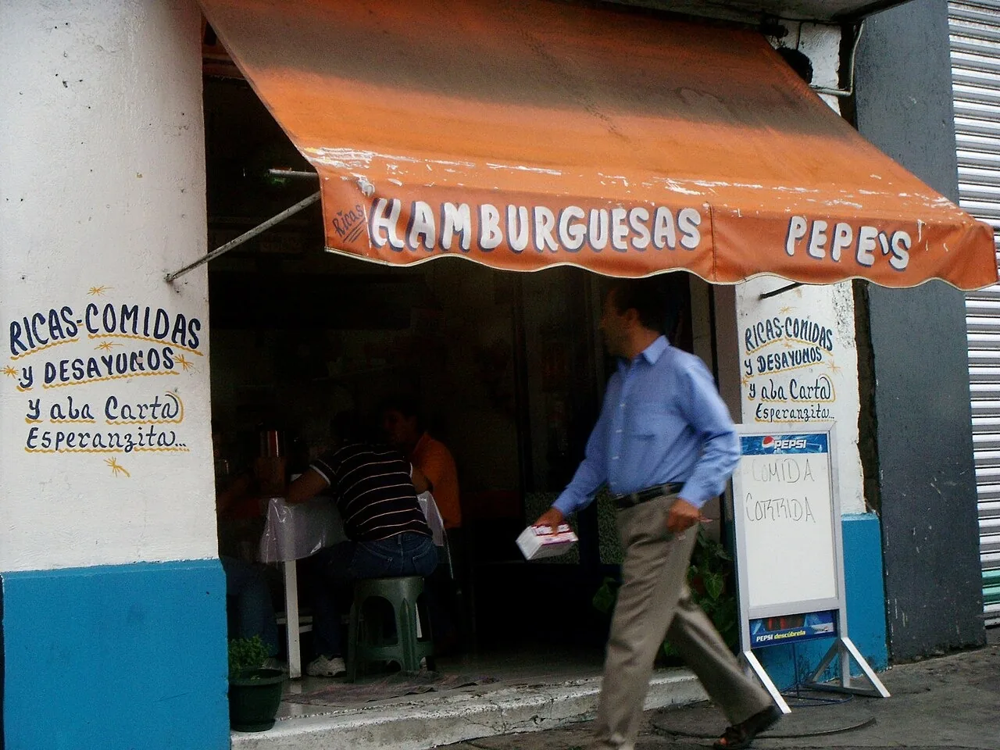

Una fachada pequeña puede tener poco espacio y demasiadas cosas que decir: nombre, producto, precio, teléfono, horario. Quien pinta el aviso decide qué se lee desde la otra acera y qué aparece solamente cuando alguien se acerca.
Un borde de puerta corta una palabra; un toldo obliga a estirarla; una persiana hace que parte del mensaje desaparezca al abrir el negocio. Ninguna de estas decisiones es secundaria. Son problemas de composición, legibilidad y uso resueltos a escala urbana, sobre un soporte que pertenece al trabajo cotidiano de otra persona.
La rotulación popular suele circular fuera de ese contexto. Una foto extrae las letras de la pared y las muestra como una imagen pintoresca; una marca toma sus sombras y colores para lanzar una campaña; un catálogo reúne alfabetos sin identificar a quien los construyó. La calle se convierte entonces en una biblioteca de estilos disponibles. Antes de usarla como inspiración hay que hacer otra cosa: reconocer el encargo, el oficio, el comercio y las circunstancias que hicieron necesario el aviso. Las letras no llegaron solas a la fachada. Alguien las pidió, alguien calculó su tamaño y alguien puso pintura, tiempo y experiencia para que fueran vistas. [1][2]
Roxana Martínez Vergara y Juan José Lozano Arango propusieron en 2023 considerar la rotulación popular una práctica de diseño en Colombia. Su investigación vincula la producción de letras hechas a mano con el trabajo comercial y con procesos que transforman el espacio urbano. El proyecto Letras hechas a mano documenta pintores avisistas, guías, talleres y alfabetos creados con ellos. Esas fuentes no convierten a todos los rotulistas en representantes de una misma estética. Permiten, más bien, mirar la diversidad de decisiones que aparece cuando se trata a quien pinta como autor de un proceso y no como una mano anónima que ejecuta una tradición. [1][2]


Antes de la letra, un encargo
Un aviso debe competir por la atención, pero no puede resolverlo todo gritando. La palabra principal necesita un tamaño que corresponda a la distancia de lectura; la información secundaria debe sobrevivir al acercamiento; el contraste tiene que mantenerse sobre el color real del muro. La fachada no es una hoja nueva. Ya tiene puertas, ventanas, manchas, reparaciones y quizá un rótulo anterior. El trabajo empieza midiendo esos límites y escogiendo qué merece ocupar el mejor lugar. La elección no es solamente formal: responde a cómo el negocio quiere ser reconocido y a lo que el barrio necesita identificar con rapidez.
En una tienda, el nombre puede funcionar como señal de pertenencia incluso para personas que nunca lo pronuncian. En una carnicería o una panadería, la lista de productos puede ser más importante que la marca. Una promoción temporal exige un soporte distinto del de un nombre pensado para durar. Por eso no existe un único criterio correcto para juzgar estas piezas desde una fotografía. Una composición saturada podría responder a una solicitud precisa de quien paga el trabajo; otra, más despejada, puede dejar fuera información que el comercio necesita. Sin hablar con las personas involucradas no sabemos por qué quedó como quedó. Podemos, eso sí, observar cómo se jerarquizan sus elementos y formular mejores preguntas.
El artículo de Martínez Vergara y Lozano Arango registra pintores vinculados a Bogotá, Buenaventura, Barranquilla, Santa Marta, Valledupar, Medellín y Cartagena, además de Valparaíso. La lista pone un límite a cualquier idea de «la» letra popular latinoamericana como estilo uniforme. Cambian las superficies, los mercados, los climas y los vocabularios. También cambian las trayectorias de quienes pintan. Un estudio cuidadoso debería poder señalar diferencias dentro de una ciudad y entre encargos de una misma persona. La categoría sirve para encontrar trabajos poco atendidos; se vuelve pobre cuando borra la experiencia específica que pretende reconocer. [1]
La guía del proyecto Letras hechas a mano presenta el trabajo de pintores avisistas de Bogotá, Buenaventura y Santa Marta. Sus materiales permiten desplazar la atención desde la letra terminada hacia herramientas, secuencias y decisiones de oficio. Para construir una palabra sobre una pared hay que establecer líneas de apoyo, distribuir espacios, resolver curvas, mantener una relación entre letras y corregir irregularidades. La destreza aparece en la capacidad de ajustar mientras se hace. No significa que cada aviso se improvise desde cero ni que las personas trabajen sin referencias. Significa que la forma final depende de una negociación continua entre idea, mano, material y soporte. [2][3]
El ancho de una «M» o el cierre de una «O» pueden variar para que una palabra quepa. A veces esa adaptación produce una solución interesante; otras, dificulta la lectura. El análisis de diseño no exige aplaudir todas las variaciones como gestos expresivos. Exige preguntar qué problema intentaban resolver y si lo resolvieron para el uso previsto. Un rótulo puede ser hábil en la aplicación de pintura y débil en jerarquía; puede ser legible desde lejos y confuso al acercarse. Tratarlo con seriedad supone poder hacer esa crítica sin despreciar el oficio ni convertir cada imperfección en una virtud automática.
La fotografía de un pequeño restaurante mexicano incluida en la edición actual de RUMMOR deja ver cómo las palabras se distribuyen sobre toldo y muro. Es una imagen fechada en 2007 y acreditada a Teknad. No documenta los procesos de los pintores colombianos estudiados por Martínez Vergara y Lozano Arango; funciona como comparación visual de un problema compartido: anunciar algo sobre superficies que ya tienen dimensiones y cortes. La imagen tampoco permite atribuir la obra a un autor que no figura en su ficha. Esa distinción entre fotografía de contexto y evidencia de un caso concreto evita que un archivo visual aparente demostrar más de lo que sabe. [4]
El trabajo de pintar tiene también una economía. Cada fachada exige tiempo de preparación, aplicación y secado; puede requerir escalera, plantillas o ayuda de otra persona. El precio depende del encargo, los materiales, la localización y las relaciones entre cliente y pintor. Sin contratos, entrevistas o registros de pago no sería honesto ofrecer una cifra general. Pero esa falta de datos no autoriza a quitar la economía del relato. Las decisiones tipográficas se toman bajo restricciones de presupuesto y plazo; el comercio que necesita un aviso puede no poder pagar todas las capas, sombras o correcciones imaginadas. Lo visible es solo una parte del acuerdo.
La categoría «popular» debe usarse con cuidado por la misma razón. Puede nombrar circuitos de comercio, modos de producción y espacios de circulación que los estudios académicos tardaron en considerar diseño. También puede convertirse en una etiqueta que deja al pintor fuera del campo profesional mientras absorbe su repertorio en proyectos mejor pagados. Reconocer que existe inteligencia gráfica en la calle no exige borrar la diferencia entre un aviso comercial y un encargo de identidad para una gran empresa. Exige mirar quién decide, quién firma, quién cobra y quién obtiene prestigio cuando un lenguaje sale de su contexto original.
La calle no es un museo de letras
Un letrero cambia la manera de recorrer una calle. Nombra una actividad, marca una esquina, hace reconocible un local en un tramo donde las fachadas pueden parecer semejantes. A veces no se recuerda el número de una dirección sino «donde está el aviso azul». Esa función de orientación convive con otra: cada negocio reclama una presencia pública. Un pequeño taller puede construir una identidad distinta de la cadena que abre a su lado. El diseño de la calle no sale de un solo plan maestro; se compone de decisiones dispersas de comerciantes, fabricantes, instaladores, pintores, autoridades y vecinos.
La pluralidad visual resultante puede ser estimulante, difícil de leer o ambas cosas. No hay que reducirla a una defensa romántica del desorden frente a una supuesta limpieza urbana. Un aviso mal ubicado puede tapar información necesaria; muchos anuncios pueden impedir que se identifique una entrada. Las reglas de espacio público también responden a problemas reales. La pregunta es cómo se elaboran y aplican sin sustituir la diversidad de voces comerciales por una imagen única de ciudad. Una calle donde todos los negocios anuncian con el mismo tamaño, color y tipografía puede ser más regular; no por eso comunica mejor la variedad de vidas económicas que contiene.
Las prácticas cambian incluso cuando una fachada conserva su nombre. Puede haber letras pintadas sobre muro, piezas cortadas en vinilo, impresión digital sobre lona y publicaciones en redes sociales para el mismo comercio. Cada soporte tiene un costo de producción, una facilidad de reemplazo y una relación distinta con la superficie. El rótulo manual no es el pasado y el archivo digital no es necesariamente el futuro. En muchos negocios conviven porque resuelven funciones diferentes. Un precio que cambia cada semana pide una solución; un nombre que identifica el local durante años, otra. La tecnología altera el trabajo sin definir por sí sola su calidad.
Vilma Lucía Naranjo Huera y Rebeca Isadora Lozano Castro estudiaron en Kepes las gráficas comerciales de Cotopaxi, Ecuador, y Tampico, México. Proponen «tecnopopular» para examinar la apropiación de herramientas digitales por pequeños talleres y comercios, en lugar de dividir la gráfica urbana entre tradición manual y diseño profesional. Su comparación parte de casos concretos: negocios de alimentos, carnicerías, peluquerías y otros establecimientos. El término no significa que las visualidades de ambos territorios sean intercambiables. Da una vía para pensar cómo una técnica nueva entra en economías y gustos locales y es usada para fines propios. [5]
El artículo compara también lenguajes comerciales con distinta proximidad a modelos corporativos. Ese punto tiene una consecuencia útil para nuestro análisis: la expansión de software y materiales de impresión no genera una sola estética. Un negocio puede copiar códigos globales, mezclar fotografías con letras de producción local o pedir una composición que responda al mercado del barrio. Las autoras observan decisiones situadas en cada caso. Una historia de «pérdida de autenticidad» que culpe a la computadora no alcanza a explicar por qué las personas escogen ciertas imágenes ni qué necesitan comunicar. Tampoco permite apreciar el conocimiento de quienes aprendieron a diseñar con herramientas digitales fuera de una escuela formal. [5]
La pantalla, además, no sustituye el soporte urbano. Un archivo preparado en computador tiene que adaptarse a medidas reales, material disponible, resistencia al clima, ubicación y lectura desde la calle. Cambia la distribución del trabajo: alguien puede diseñar, otra persona imprimir y otra instalar. Se multiplican los puntos donde decidir quién merece crédito. La rotulación pintada y la gráfica impresa comparten una exigencia que a menudo desaparece en la imagen tomada de frente: su sentido depende de la fachada, de los recorridos que pasan por ella y de la actividad que continúa detrás del aviso.
El filete porteño permite introducir otro problema, con una historia propia. La UNESCO inscribió en 2015 esta técnica pictórica tradicional de Buenos Aires en la Lista Representativa del Patrimonio Cultural Inmaterial de la Humanidad. La edición visual actual de RUMMOR incluye una fotografía de fileteado sobre un vehículo escolar argentino, fechada en 2007. Esa imagen no debe presentarse como ejemplo de rotulación comercial colombiana: tiene otra procedencia, otros usos y otro repertorio. Sirve para preguntar cómo una práctica cambia cuando se documenta, se enseña, se protege y se vuelve referencia para encargos nuevos. [6][7]
El patrimonio puede ayudar a reconocer a quienes sostienen una técnica, pero el reconocimiento oficial no garantiza por sí mismo trabajo justo ni transmisión. Una letra que pasa de un vehículo a un cartel turístico puede adquirir nueva visibilidad y perder parte del encargo que le daba sentido. Una escuela puede enseñar trazos mientras desaparecen espacios donde ejercerlos. No se deduce de ello que toda circulación patrimonial sea una pérdida. La consecuencia es más concreta: cada traslado exige documentar quién hizo el trabajo, bajo qué condiciones y con qué posibilidad de seguir practicándolo. Conservar la imagen de un oficio y conservar la capacidad de vivir de él son proyectos relacionados, pero no idénticos.
La circulación digital añade otra capa. Una fotografía puede conservar un letrero que fue borrado y permitir que se estudie años después. También puede cortar la fachada, ocultar el nombre de quien pintó y viajar como material visual disponible para cualquiera. Las herramientas de búsqueda hacen fácil encontrar formas y difícil reconstruir contratos, autorías y lugares. Si una marca usa una letra encontrada en la calle, debería averiguar quién la hizo y qué autorización requiere su reproducción. Si una publicación estudia la pieza, debería registrar al menos fecha, ubicación, soporte y autor conocido o desconocido. La abundancia de imágenes no reemplaza esa ficha mínima.
Documentar tampoco equivale a congelar una calle. La misma fachada puede cambiar de actividad y su rótulo puede ser cubierto por otro. Un archivo de dos fotografías tomadas con años de diferencia deja ver transformaciones de comercio, materiales y lenguaje; una imagen aislada tiende a presentarse como la expresión permanente de un lugar. La documentación que necesita RUMMOR es menos una colección de «joyas escondidas» que una serie de preguntas verificables: quién pidió el aviso, quién lo produjo, cuánto tiempo estuvo allí, qué había antes y qué lo reemplazó. Lo que no se sabe debe quedar visible como desconocido.


Quién firma la forma
El sitio Letras hechas a mano hace una intervención significativa al nombrar a Roberto Ayala, Santiago Bueno, Mario Fajardo, Germán González y Gilberto Hernández, entre otros pintores. También presenta alfabetos comisionados y espacios de encuentro. Los nombres importan porque cambian la frase que se puede escribir sobre un letrero. Ya no hay necesidad de decir «la gente hace esto» cuando una fuente permite reconocer trayectorias y obras. Al mismo tiempo, una lista de autores documentados no representa a todos los que trabajan en la ciudad. La investigación debe poder ampliar su campo sin reemplazar una invisibilidad por un canon pequeño. [2][8]
Un alfabeto hecho para una investigación o exposición tiene otras condiciones que un aviso hecho para una tienda. En el primero puede ensayarse una serie de letras, explorar formas y recibir un crédito visible. En el segundo, la prioridad puede ser entregar a tiempo, ajustarse a un muro y responder a cambios pedidos por el cliente. Compararlos permite ver la amplitud del oficio; confundirlos podría producir una historia demasiado cómoda sobre el reconocimiento. La pregunta no es si el pintor «es artista» o «es diseñador» según una categoría externa. Es qué conocimientos ejerce y cómo cada circuito remunera y presenta ese conocimiento. [2][8]
La investigación académica también toma decisiones de diseño cuando selecciona ejemplos. Puede mostrar letreros que confirman una teoría y dejar fuera anuncios ordinarios, fallidos, repetitivos o hechos con una mezcla de técnicas. Martínez Vergara y Lozano Arango proponen mirar la habilidad y el proceso de organización gráfica. Esa perspectiva permite incluir piezas que no funcionan bien como imagen de promoción, pero sí ayudan a entender cómo se aprende, se ofrece y se negocia un servicio. Un repertorio de fotografías espectaculares no basta para estudiar un oficio. Hace falta registrar también su trabajo corriente. [1]
La valoración estética puede entonces ser más precisa. Un aviso puede conseguir una distribución eficaz del espacio, una voz reconocible y una tensión interesante entre letras y dibujos. Otro puede usar el mismo repertorio sin resolver su lectura. La crítica no debe confundir respeto por el productor con obligación de declarar admirable cada resultado. Reconocer diseño implica reconocer decisiones discutibles, comparables y mejorables. La condescendencia que llama «auténtico» a cualquier letrero hecho a mano reduce a su autor a la espontaneidad; una lectura atenta le atribuye intención, técnica y posibilidad de crítica.
Hay una pregunta social que la imagen sola no responde: quién puede pagar una fachada con carácter propio. La homogeneidad comercial puede surgir de regulaciones, alquileres, franquicias o contratos de identidad; la diversidad puede depender de negocios independientes con margen para decidir. Sin estudiar una calle específica no podemos atribuir sus cambios a una sola causa. El aviso ofrece, sin embargo, una entrada para investigar: al comparar fechas, negocios y autores, la gráfica puede revelar transformaciones de propiedad, consumo y presencia económica. La letra es un registro material de decisiones que ocurrieron fuera del estudio de diseño.
La primera tarea editorial de RUMMOR sería construir casos con suficiente contexto para que puedan contradecir nuestras preferencias. Si una rotulista considera útil un archivo digital, no cabe convertirla en guardiana obligatoria de lo manual. Si un comerciante prefiere impresión barata porque necesita actualizar precios, no hay razón para exigirle una fachada artesanal por interés estético de otros. Si una comunidad decide conservar un aviso, conviene preguntar a quién pertenece y quién asumirá su reparación. El criterio editorial no debe venir antes de la conversación con las personas que viven de esas decisiones.
Un reportaje futuro podría seguir un solo encargo de principio a fin: conversación con el negocio, medidas de fachada, bocetos, compra de materiales, ejecución, correcciones y uso después de abrir. Mostraría cuánto cuesta una elección, quién la propone y qué cambia al verla en la calle. También permitiría entender qué parte del conocimiento puede enseñarse mediante una guía y cuál se adquiere a fuerza de ajustar el ojo sobre superficies desiguales. Este ensayo documental no ha seguido ese proceso ni atribuye testimonios a pintores. Su función es preparar las preguntas que una visita de campo debe resolver.
La ciudad escrita a mano no es una reserva de nostalgia. Es un lugar donde se cruzan trabajo, comercio, tecnología y derecho a aparecer con voz propia. El aviso que parece menor propone un problema muy grande para el diseño: hacer visible una actividad concreta dentro de un espacio compartido, con recursos limitados y consecuencias públicas. Al leerlo de cerca aprendemos a ver más que su estilo. Vemos quién tomó decisiones, qué permitió la fachada, qué contó el negocio y qué dejó la calle que lo rodeaba. Esa lectura necesita conservar la escala de la calle: el aviso se entiende caminando frente a él, no solamente ampliándolo en una pantalla. Si el letrero desaparece mañana, la pregunta importante no será solo si conservamos su fotografía, sino si llegamos a saber quién lo hizo y para quién.
Fuentes.
- Roxana Martínez Vergara y Juan José Lozano Arango, «Cuatro reflexiones sobre la rotulación popular», Desacatos 73, 2023.
- Universidad de los Andes, Letras hechas a mano. Proyecto de investigación y creación.
- Letras hechas a mano, guía práctica de rotulación. Trabajo de pintores de Bogotá, Buenaventura y Santa Marta.
- Teknad, fotografía de un restaurante de Ciudad de México, julio de 2007. Imagen de comparación, licencia CC0; no documenta el caso colombiano.
- Vilma Lucía Naranjo Huera y Rebeca Isadora Lozano Castro, «Producciones tecnopopulares…», Kepes 20(27), 2023. Casos de Cotopaxi y Tampico.
- UNESCO, inscripción del filete porteño, 2015.
- Roberto Fiadone, ficha fotográfica de fileteado en un vehículo, Buenos Aires, abril de 2007. Imagen comparativa, CC BY-SA 3.0.
- Letras hechas a mano, pintores y alfabetos comisionados.
Alcance: ensayo de crítica de diseño basado en fuentes abiertas consultadas el 17.11.2026. No hubo entrevistas ni recorrido de campo propios. Colombia, México, Argentina y Ecuador se tratan como casos distintos. Los avisos sin autor identificado no reciben atribuciones inventadas.